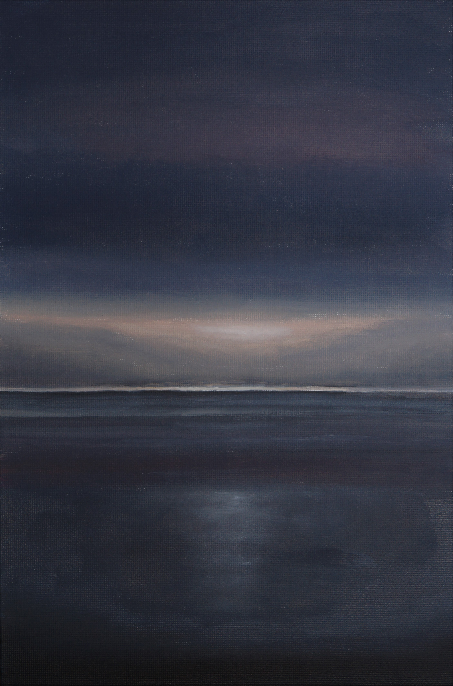
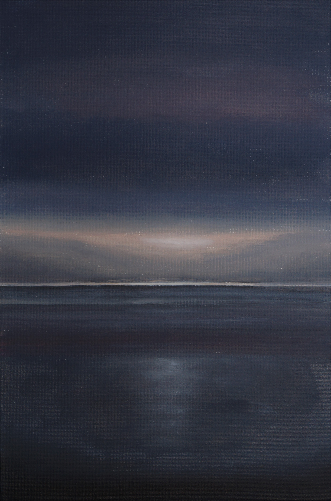
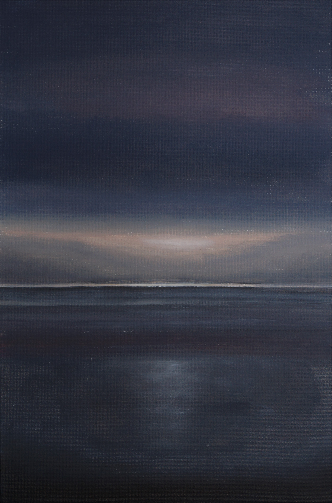

Галерея
Обо мне
Тьма
всё ближе

15.08.22 Холст на картоне 20х30, масло
Я окончила ВУЗ. в моих мыслях был лишь бесконечный вопрос что же делать дальше.
Я чувствовала облегчение, но и пустоту, которую ничто не могло заполнить. И вновь
мои переживания были отражены на холсте. Темный цвет сомнениями обволакивает
со всех сторон. Вдали лучи света легким бликом чуть касаются поверхности воды.
Яркая полоса света разрезает общую тьму пейзажа.
За счет высокой контрастности полотно будто светится изнутри. И все-таки свет
сильнее и все будет хорошо.
 

 15.08.22 Холст на картоне 20х30, масло
Я окончила ВУЗ. в моих мыслях был лишь бесконечный вопрос что же делать дальше.
15.08.22 Холст на картоне 20х30, масло
Я окончила ВУЗ. в моих мыслях был лишь бесконечный вопрос что же делать дальше.